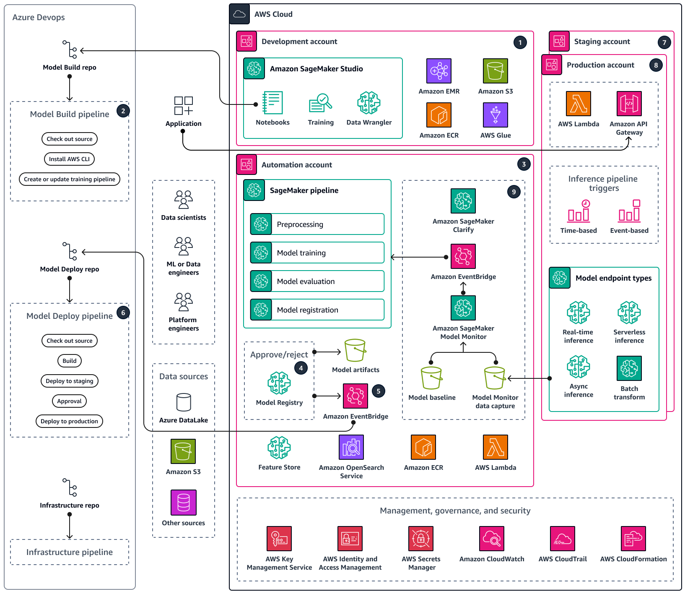

Early systems
Mainframes supported many users, but cost and centralized control limited growth.
From centralized systems to virtualized cloud infrastructure
Servers are one of the foundations of the web because they store, process, and deliver content to users. What started as centralized mainframe systems has grown into distributed cloud platforms that support websites, applications, APIs, and online services around the clock.
This project explains how server technology changed over time, why virtualization became a major turning point, and how cloud-based infrastructure now supports modern web services.

Mainframes supported many users, but cost and centralized control limited growth.
Client-server architecture separated user interaction from service delivery.
Cloud infrastructure lets organizations scale services without buying every server themselves.